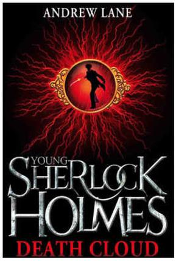

In this 8 book series, a teenage Sherlock Holmes runs the streets of 1860 London, learning the tricks of the trade in crime solving:
Death Cloud: Fourteen-year-old Sherlock Holmes is sent to live with his Aunt and Uncle in Hampshire and teams up with Matty Arnatt to investigate two mysterious deaths which appear to be somehow related to a black cloud which Sherlock Holmes has to solve.
|

Red Leech: Sherlock Holmes investigates the possibility that John Wilkes Booth is alive which takes Sherlock to America with his mentor, Amyus Crowe.
|

Black Ice : Sherlock's brother, Mycroft, invites him to London for a visit, but when he arrives at his brother's club, they discover Mycroft with dagger in his hand over a dead body.
|

Fire Storm : Sherlock's mentor and his daughter, Virginia, have disappered, their house looks as if it was abandonned.
|

Snake Bite : Sherlock finds himself in China after being kidnapped.
|

Knife Edge : Sherlock finds himself to be in the middle of a kidnapping.
|

Stone Cold : Sherlock Holmes has been sent to live in Oxford for his schooling, body parts are being stolen from corpses and are being mailed to an address in London.
|

Night Break : Sherlock's mother has died and his father has went missing in India while his sister beagn acting erraitcallu. A stange disappearance leads them to Egypt.
|